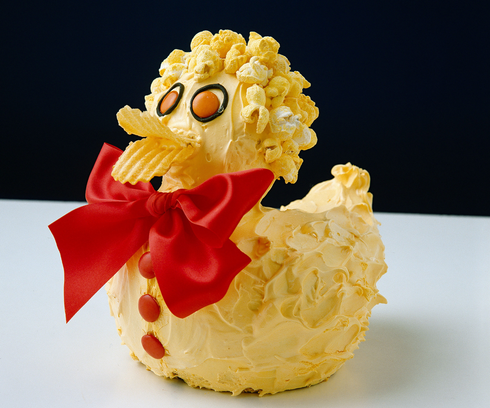

Duck Cake

Man, the duck cake looks really cool. I saw these on Bluey and I remember Bandit crying, so I think
that it will taste good. Hopefully you don't burst into tears while trying to bake it.
Ingredients
- 2 packets of butter cake mix
- 2 bamboo skewers
- 1 quantity of Fluffy Frosting
- Apricot food colouring
- Round flat sweets (as shown)
- Licorice
- Coloured popcorn
- Potato crisps (chips for the rest of the world)
- Wide ribbon
Steps
- Make cakes according to directions on packet, pour one quarter of mixture into greased
25cm x 8cm (10in x 3in) bar tin, pour remaining mixture into greased deep 20cm (8in)
square cake tin, bake in moderate oven 30 minutes for bar cake, 1 hour for square cake or
until cooked when tested. Stand 3 minutes, turn on to wire rack to cool.
- Cut square cake in half vertically, as shown; place bar cake on its side, cut in half, cut wedge-shaped
piece off one end, as shown. Only the half with the wedge cut off is required; it forms the head and neck.
Stand the two pieces of square cake side by side with cut sides up and bases together, cut off the four corners,
cutting more from one end than the other, as shown, for the duck’s tail end, then cut a wedge-shaped piece from tail end,
as shown, to give shape to the body; discard scraps. Take the piece of bar cake for head and neck, cut four small wedges,
one from each side, 2cm (¾in) in from end where wedge was cut; this angled end is where neck joins body.
- Shape duck’s body by making a cut at tail end: cut down on an angle for about 2.5cm (1in), then cut upwards, still
on an angle, towards front of body; shape body carefully with small serrated knife to give rounded effect. Position
head and neck piece, secure with two bamboo skewers, as shown, pushing skewers right through body. Shape head carefully
with small serrated knife, so that neck sits neatly on body; cut off ends of skewers, as shown. It is necessary to leave skewers
in place to support head.
- Place duck on prepared board, tint Fluffy Frosting with apricot food colouring, cover head and body with Fluffy Frosting, leave sides
looking fluffy to represent feathers, smooth head, neck and chest with a small spatula. Small coloured sweets represent eyes and buttons; surround eyes
with thin strips of licorice. Yellow popcorn represents down on head, two large potato crisps represent bill. Place large bow at duck’s neck.
Home